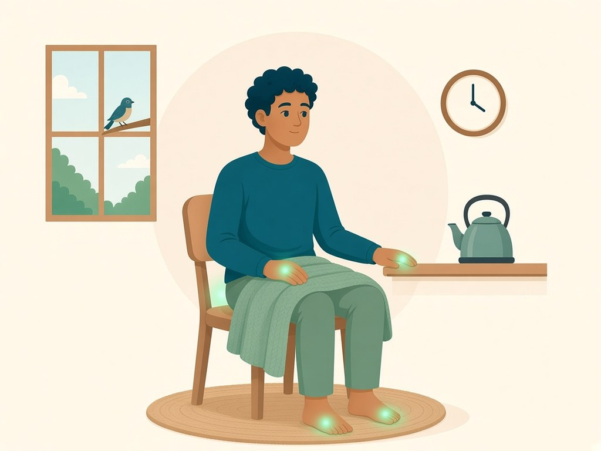
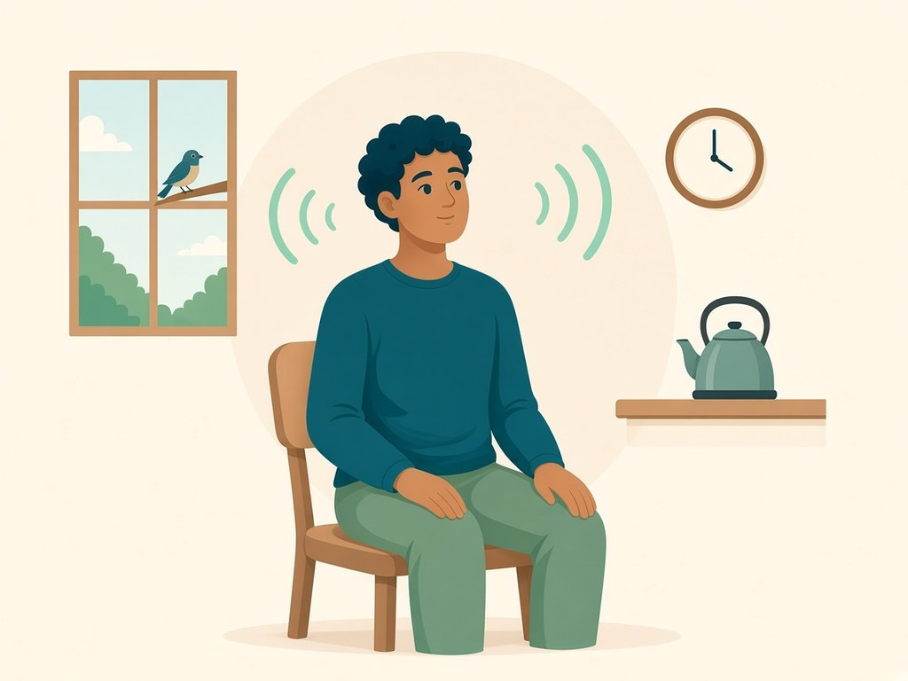
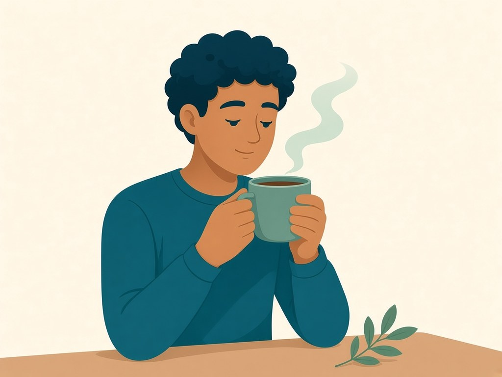

Library › Guides
5-4-3-2-1 grounding
Eyes open. Five things you see, then feel, hear, smell, taste.

Keep your eyes open. Name five things you can see, four you can feel, three you can hear, two you can smell, and one you can taste.
Stay with the room. If this stirs distress, stop, look at something ordinary, and talk to your doctor or counsellor.
Step by step
See 5
Name five things in sight.

Feel 4
Four things touching you: chair, floor, clothes, air.

Hear 3
Three sounds, near or far.

Smell 2
Two scents, even faint ones.

Taste 1
One taste, or just notice your mouth.
Where this comes from
5-4-3-2-1 is a common grounding exercise used by counsellors and mental health services. Its exact origin is not known, and versions put the senses in different orders.
Why it can help
Naming what you can see, feel, hear, smell and taste moves attention out of racing thoughts and back into the room. Healthdirect suggests grounding through the senses as one way to practise mindfulness. It is quick, but it is not right for everyone. If it stirs up distress, stop.
For any health concern, talk to your GP or a doctor. HomeCircle is support, not medical care.